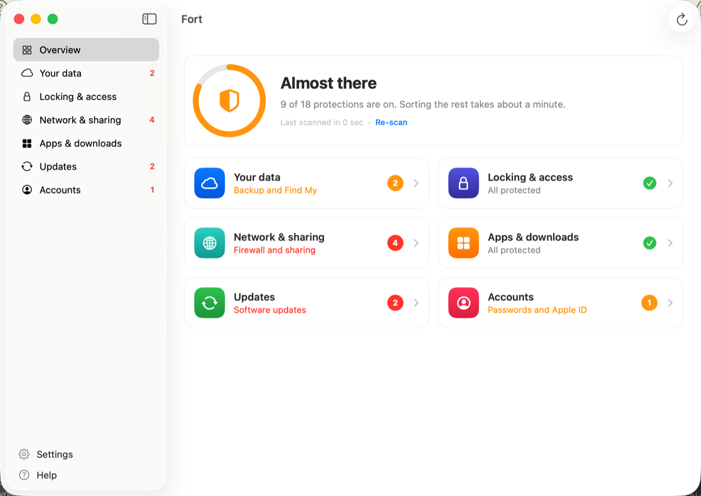

fort scans 18 security settings, explains each one in plain English, and fixes what it safely can — in one click. No jargon. No anxiety. Just clarity.
macOS 13+ · Apple Silicon + Intel · No spam

Every check has a plain-language "why it matters" and a collapsible technical disclosure — useful whether you're a developer or just want to understand your Mac.
FileVault encryption, Find My, Time Machine backup
Screen lock, automatic login, guest account, TouchID for sudo
Firewall, stealth mode, SSH, remote management, sharing services
Gatekeeper app safety check, System Integrity Protection
Automatic update policy, current OS patch level
Password manager presence, Apple ID two-factor authentication
fort speaks two languages: plain English for everyone, and raw terminal output for the curious.
A single 0–100% score across all checks. Green when you're protected, amber/red with clear next steps.
Screen lock, automatic login, guest account, TouchID for sudo — fixed instantly via a privileged helper. No password prompt in the app.
For checks that need manual action, fort shows numbered steps and opens the exact System Settings pane you need.
Every check shows the raw command transcript — current value, expected value, and evidence. For the curious and the auditors.
No account. No telemetry. No network requests (except Sparkle update checks, which you can turn off). Everything stays on your Mac.
Built with SwiftUI. Respects your system appearance, uses Apple's system palette, and feels at home on your Mac.
Prefer the terminal? The same checks are available as a Go CLI with --json, --fix, and auditor-ready HTML reports.